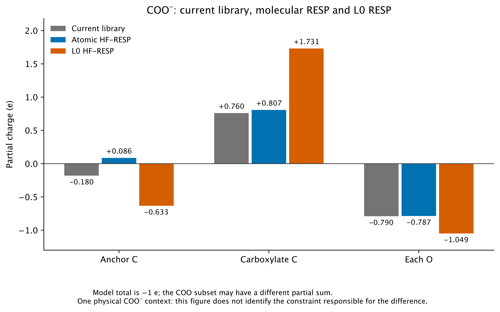

RESP charges from the molecular fit and shared L0 fit, compared with the current library. The complete product has a charge of −1 e; also imposing −1 e on the block alone is an additional constraint. One chemical context, no final parameterization selected.